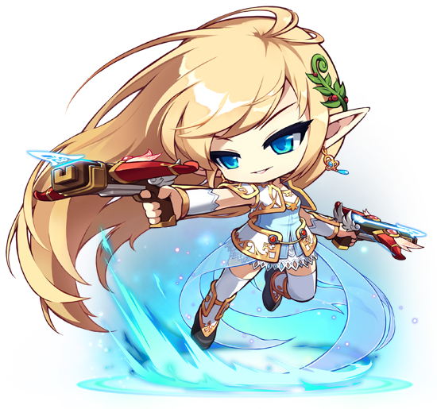

궁수 영웅
메르세데스
수백년 전 메이플 월드를 파멸 직전까지 내몰았던 검은 마법사를봉인한 6명의 영웅 중 한 명으로, 듀얼 보우건을 사용하는 엘프의 왕이다.
설정 상 세계관 내 최강의 궁수로 봐도 무방하다.
여섯 영웅들 중에서 직접적으로 검은 마법사 딜링이라는 역할을 맡았었다.
다른 영웅들 중 당시 팬텀은 스우 레이드를 뛰고 있었고, 아란은 부상으로 인해 검은 마법사에게 가지는 못한 채 길목에서 검은 마법사의 방으로 증원하려는 적들을 막고 있었다.
루미너스와 은월은 메르세데스가 기절한 당시에 도착했는데 그 뒤로 각각 은월은 봉인의 제물로, 루미너스는 몸을 날려 마지막 봉인을 하였고,
함께 왔었던 프리드는 크기가 너무 큰 아프리엔이 신전 안에 들어오지도 못하는 데다 시간의 봉인을 설치해야했으므로 일찍 도착하여 검은 마법사에게 딜링을 넣은 역할은 사실상 메르세데스였다.
프리드와 함께 제일 먼저 검은 마법사와 맞섰으나 큰 부상을 입고 쓰러지게 되고, 이후 나머지 영웅들이 간신히 검은 마법사를 봉인하는 데 성공한다.
그러나 검은 마법사가 봉인되기 직전 최후의 발악으로 모든 영웅들에게 깊은 잠에 빠지게 되는 저주를 내렸는데,
왕이 저주에 걸리면 나머지 백성들 또한 같은 저주에 걸려버리는 엘프족의 특성상 장로들을 비롯한 모든 백성들이 메르세데스를 따라 깊은 잠에 빠지게 될 위기에 처한다.
메르세데스는 자신에게 저주가 완전히 내려지기 전에 저주에 걸린 엘프들이 안전하게 지낼 수 있도록 에우렐에 봉인 마법을 걸었으며,
이후 수백년이 지나 저주가 풀리자 메르세데스는 엘프족 중에서 가장 먼저 눈을 뜬다.
저주로 인해 레벨이 10으로 떨어져 버리지만, 에우렐을 지키는 위대한 정신의 도움으로 점차 자신의 능력을 되찾게 되며
긴 잠에서 깨어난 동료 영웅들과 함께 검은 마법사를 부활시키려는 조직 블랙윙을 저지하려는 메이플 연합에 가입하게 된다.
